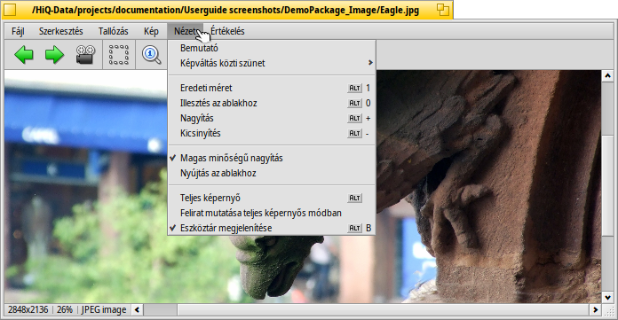
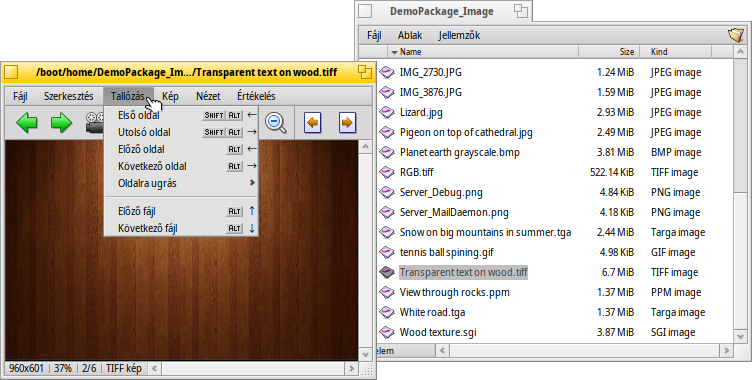
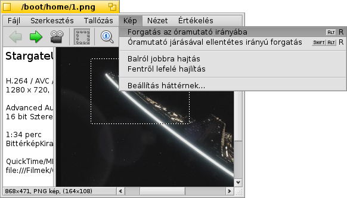

Képmegjelenítő (ShowImage)
Képmegjelenítő (ShowImage)
| Asztalsáv: | Nincs bejegyzés. Általában egy támogatott fájltípus megnyitásakor indul el. | |
| Útvonal: | /boot/system/apps/ShowImage | |
| Beállítások: | ~/config/settings/ShowImage_settings |
A Képmegjelenítő lehetőséget nyújt az összes kép megjelenítésre, amihez van értelmező. Ezt ellenőrizhetjük a Értelmezők beállításainál. Az új formátumokat automatikusan felismeri amikor ahhoz tartozó értelemzőt adunk a rendszerhez.
A program minimális szerkesztési lehetőséget is biztosít: levágás, forgatás és tükrözés; továbbá bármely más formátumba elmenthetőek a módosítások, illetve maga a fájl.
 Megjelenítés
Megjelenítés

A menüből indítható a mappában található összes képből (vagy a lekérdezés eredményéből). Itt megadhatjuk a et is 2 és 20 másodperc között.
A többi menüpont a jelenleg megnyitott képre vonatkozik (az ablak átméretezése nélkül):
- a képet az eredeti méretűre méretezi át.
- a képet az ablak méretéhez igazítja, például ha átméretezzük az ablakot.
és - a kép méretének 10%-os léptékben való csökkentése illetve növelése. Ezt az egér görgőjével is megtehetjük. Továbbá, ha kép mérete nagyobb, mint maga az ablak, akkor azt a bal egérgomb lenyomása melett mozgathatjuk.
Két beállítási lehetőség van, ami nem csak a jelenlegi képre érvényes:
- egy gyors szűrő alkalmazása, amivel tisztább képet kapunk közelítéskor.
- a kisebb képet az ablak méretéhez nyújtja.
Ha s módban vagyunk és ha a be van jelölve, akkor a fájl neve a kép alsó részén fog megjelenni.
Végül, a elrejti/megjeleníti a grafikus vezérlőt:

From left to right: Previous image, next image, start slide show (in full screen mode), selection mode, original size, fit to window, zoom in, zoom out, previous and next page (when an image format like TIFF allows multiple pages in one file, see below).
A legtöbb gyakori parancs a kép helyi menüjében is elérhető teljes képernyős módban.
Böngészés

Miután megnyitunk egy képet, gyorsan váltogathatunk a mappában vagy a lekérdezés eredményében lévő képek közt a ↑/↓ vagy ←/→ lenyomásával. Az éppen aktuális kép a Nyomkövető ablakban is kijelölésre kerül.
Ahhoz, hogy a jelenlegi képet tartalmazó mappát megnyissuk van egy gyorsabb megoldás is, mint a mappa megkeresése. Ez épp úgy működik, mint a Menü navigáció a Nyomkövető esetében, amikor az állapotsor információs területére kattintunk. Jelen esetben a bal alsó sarokban lévő információs területre (ahol a kép mérete és típusa található).
A menüvel egy másik típusú képváltogatásra is lehetőségünk van: néhány képformátum, mint például a TIFF, több oldalt/képet is tartalmazhat egy fájlban. Például az és menüpontokkal navigálhatunk az oldalak/képek között.
Szerkesztés

A menüből néhány módosítást elvégezhetünk a képen: forgatás és tükrözés. Ezekkel a műveletekkel a kép adata nem fog megváltozni. Csupán egy jellemzőt kap a fájl, miszerint a kép elforgatva vagy épp tükrözve jelenjen meg.
A megnyitja a Hátterek beállítási panelt, ahol a jelenlegi képet megadhatjuk háttérnek.
A kivágás egy újabb funkció, amire gyakran szükségünk lehet. Kivágás megadásához ra kell váltanunk a menüből és az egérrel egy négyzetet kell rajzolnunk. Ha nem akarsz módot váltani, akkor a CTRL lenyomása közben "normál módban" is megteheted, ellenkező esetben ugye a képet mozgatjuk.
A vagy az ESC lenyomásakor a kijelölési négyzet törölhető.
A következő fejezetben meglátjuk, hogyan is tudjuk elmenteni a kép egy kijelölt részét.
Mentés és átalakítás
Hogy elmentsük a képet az elérhető formátumok egyikébe (vagy a jelenlegi formátumba), egyszerűen csak válasszuk a almenüt a menüből, válasszuk ki a formátumot, és adjuk meg a fájlnevet.
Egy másik gyors megoldás, hogy ha már meg van nyitva az a mappa, ahová el akarjuk menteni a fájlt, akkor csak húzzuk bele a képet.
Ugyan így működik, ha a kép egy részét akarjuk kivágni/elmenteni. Vagy jelöljük ki a kép egy részét, vagy válasszuk a menüt az egész kép kijelöléséhez. Ezután pedig a kijelölt területet dobjuk az Asztalra vagy egy Nyomkövető ablakba a kép létrehozásához. Az új kép formátuma megegyezik majd az eredeti képével.
Ha más formátumba akarjuk elmenteni a kivágást, akkor jobb gombbal húzzuk a Nyomkövető ablakba, és majd a helyi menüben válasszuk ki a kívánt formátumot.
Billentyű parancsok
A leggyakoribb kombinációk:
| ← / ↑ | Előző kép | |
| → / ↓ | Következő kép | |
| DEL | A Szemetesbe helyezés | |
| + | Közelítés | |
| - | Távolítás | |
| 0 | Eredeti méret | |
| 1 | Az ablakhoz igazítás | |
| ALT ENTER | Váltás teljes képernyős módban (dupla-kattintással is) | |
| CTRL | A CTRL-t lenyomva tartva anélkül jelölhetünk ki egy területet a képen, hogy kijelölés-módra váltanánk |